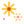
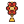
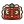
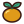
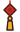
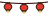
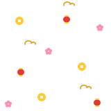
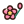

coin-knob-off.svg
14×14 px · 0 0 24 24coin-knob-on.svg
14×14 px · 0 0 24 24coin-mask.svg
14×14 px · 0 0 24 24coin.svg
14–24 px · 0 0 24 24dragon-peek.svg
40×26 px · 0 0 40 26envelope.svg
24–34 px · 0 0 24 28firecracker.svg
24 px · 0 0 24 28fireworks.svg
15–22 px · 0 0 24 24
icon-coin.svg
16–32 px · 0 0 24 24icon-dragon.svg
16–32 px · 0 0 24 24icon-drum.svg
16–32 px · 0 0 24 24icon-dumpling.svg
16–32 px · 0 0 24 24icon-envelope.svg
16–32 px · 0 0 24 24icon-fan.svg
16–32 px · 0 0 24 24icon-firecracker.svg
16–32 px · 0 0 24 24icon-fireworks.svg
16–32 px · 0 0 24 24icon-ingot.svg
16–32 px · 0 0 24 24icon-knot.svg
16–32 px · 0 0 24 24
icon-lantern.svg
16–32 px · 0 0 24 24icon-lion.svg
16–32 px · 0 0 24 24
icon-plum-blossom.svg
16–32 px · 0 0 24 24icon-tangerine.svg
16–32 px · 0 0 24 24
ingot.svg
24–36 px · 0 0 32 22knot.svg
14–38 px · 0 0 20 32
lantern-string.svg
48×16 px · 0 0 48 16
lantern.svg
16–30 px · 0 0 24 30lion-peek.svg
36×28 px · 0 0 36 28pattern.svg
160×160 px · 0 0 160 160
plum-blossom.svg
16–22 px · 0 0 24 24